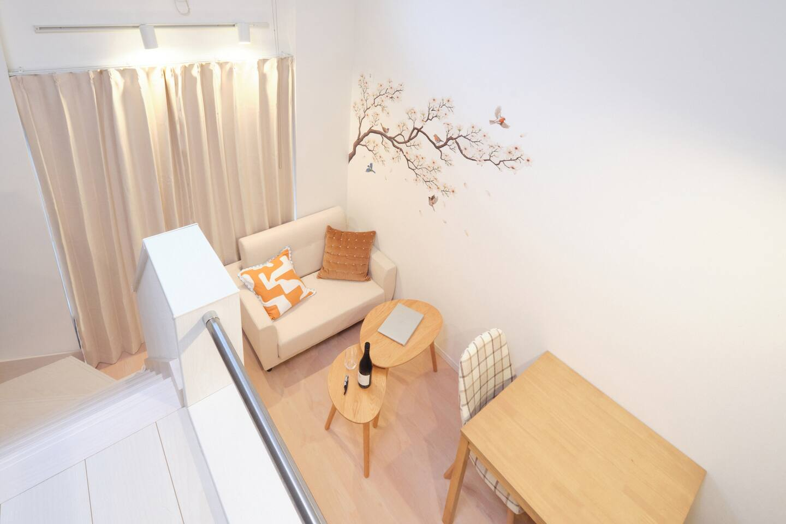

YOKOHAMA Still Retreat
静かな住宅街の、ロフト付きメゾネット
住宅街の静けさの中で、暮らすように過ごす
横浜・鶴見の静かな住宅街にある3つのお部屋です。ロフトが寝室、下階がくつろぎスペースのメゾネットで、定員は各3名。公式サイトからの直接予約も準備を進めています。
こんな滞在におすすめ
- 一人旅・カップル・少人数での旅行（各室3名まで）
- 出張やワーケーション（Wi-Fiとモニターがあります）
- キッチンと洗濯乾燥機を使った連泊
- 羽田空港を使う前後の宿泊（鶴見駅から約20分）
- 静かな住宅街でゆっくり過ごしたい方
※オンライン予約は準備中です。


公式サイト限定 ベストレート保証
同じお部屋・同じ日程なら、公式サイトが一番お得な料金です。
【仮】もし他の予約サイトで、より安いお支払い総額を見つけた場合はご連絡ください。差額をお返しします（同じお部屋・日程・人数・キャンセル条件で、誰でも予約できる料金が対象。会員限定の料金やクーポンは対象外）。
全室共通の設備
- Wi-Fi（無料）
- キッチン（IHコンロ）・シンプルな食器類
- ドラム式洗濯乾燥機
- 電子レンジ・電気ケトル・炊飯器
- エアコン・サーキュレーター・室内物干し
- 24インチモニター（PC・ゲーム機をつなげます。テレビ放送は見られません）
- タオル・シーツ
- シャンプー・コンディショナー・ボディソープ
- アイマスク・耳栓
- コーヒー・紅茶
- シャワールーム（バスタブはありません）
- アイロン
- セルフチェックイン（電子錠）
アクセス
駅からの行き方
- JR鶴見駅（西口）から徒歩約11分（上り坂があります）
- 京急鶴見駅から徒歩約17分
- タクシーはJR鶴見駅から約3分
- 駅〜宿のタクシー代を、片道1,000円・往復2,000円まで払い戻します
所在地：横浜市鶴見区寺谷。詳しい住所はご予約確定後にお知らせします。
鶴見駅から電車で
- 川崎：約4分
- 横浜：約10分
- 東京：約25分
- 羽田空港：約20分
いずれも鶴見駅からの所要時間です（宿からではありません）。
駐車場
敷地内に駐車場はありません。近くに予約制駐車場・コインパーキングがあります。
周辺のご案内
- 閑静な住宅街で、周辺は静かです
- 曹洞宗大本山「總持寺」が近くにあります
- 鶴見駅前はにぎやか（ドン・キホーテなど）
- 駅前にスーパー（西友・京急ストア）
- コンビニが数軒あります
ハウスルール
- チェックイン
- 16:00〜（セルフチェックイン）
- チェックアウト
- 10:00まで
- 喫煙
- 全面禁煙です
- パーティー
- できません
- ペット
- ご遠慮いただいています
- 楽器
- 演奏はできません
- 定員
- 1部屋あたり3名まで
ご予約前にご確認ください
- エレベーターはありません。階段が狭く、大型のスーツケースは運びにくいです（201・202は2階です）。
- JR鶴見駅からは上り坂があります。荷物が多いと負担になることがあります。
- ロフトは天井が低めです。背の高い方は頭上にご注意ください。
- ロフトのベッドの端に柵がありません。小さなお子様連れの方はご注意ください。
- 曇りガラスの天窓があり、朝の光が入ります（アイマスクをご用意しています）。
- バスタブはなく、シャワールームのみです。
- テレビ放送は見られません（モニターにPC・ゲーム機などをつないで使います）。
よくある質問
チェックインの方法は？
電子錠を使ったセルフチェックインです。16:00からご利用いただけます。チェックアウトは10:00までです。
駐車場はありますか？
敷地内に駐車場はありません。近くに予約制駐車場やコインパーキングがあります。
駅からのタクシー代は払い戻されますか？
駅〜宿のタクシー代を、片道1,000円・往復2,000円まで払い戻します。
何名まで泊まれますか？
1部屋あたり3名までです。
喫煙はできますか？
全面禁煙です。
Wi-Fiはありますか？
はい、全室で無料のWi-Fiをご利用いただけます。
荷物を預けられますか？
チェックイン前は、お部屋に空きがあればお預かりできる場合があります。事前にご相談ください。チェックアウト後のお預かりはできません。
滞在中の清掃やタオル交換はありますか？
滞在中の清掃・タオル交換はありません。タオルはお部屋の洗濯機で洗ってお使いください。
予約後に必要な手続きはありますか？
法令により、宿泊される全員の氏名・住所・職業などを、ご予約後に専用フォームでご登録いただきます。日本国内に住所のない方は、パスポートの画像も必要です。
ご予約
公式サイトでのご予約は、準備ができ次第ご案内します。
※オンライン予約は準備中です。